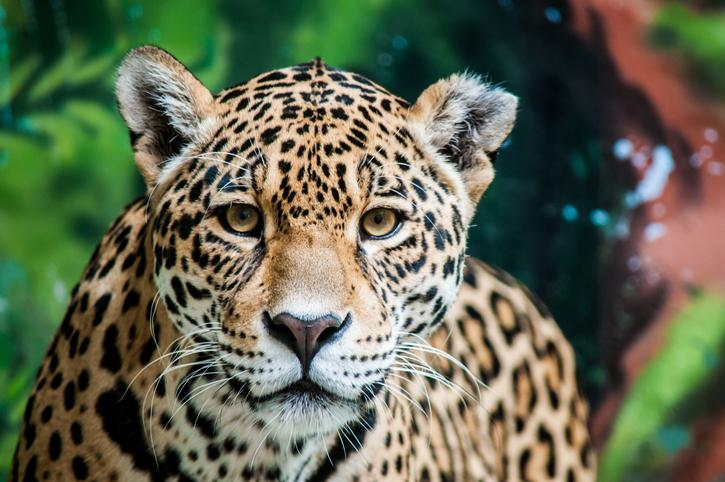
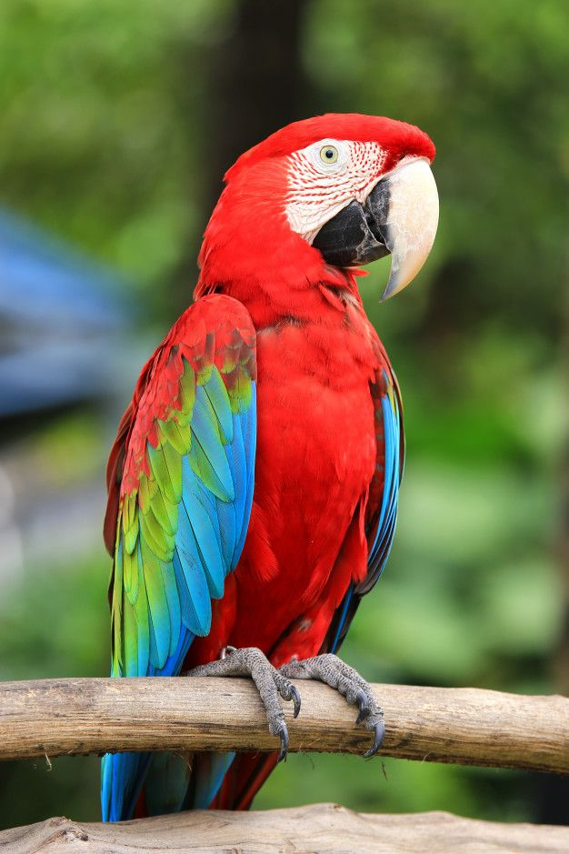

Perro
el origen del perro se sitúa entre hace 34,900 y 33,000 años antes del presente.

Tigre
Los restos más antiguos de tigres verdaderos provienen de Java, y tienen entre 1,6 y 1,8 millones de años de antigüedad
Guacamayo
De origen americano que habitan desde las selvas de México hasta el noreste de Argentina, aproximadamente.
Notas de secundarias variedad